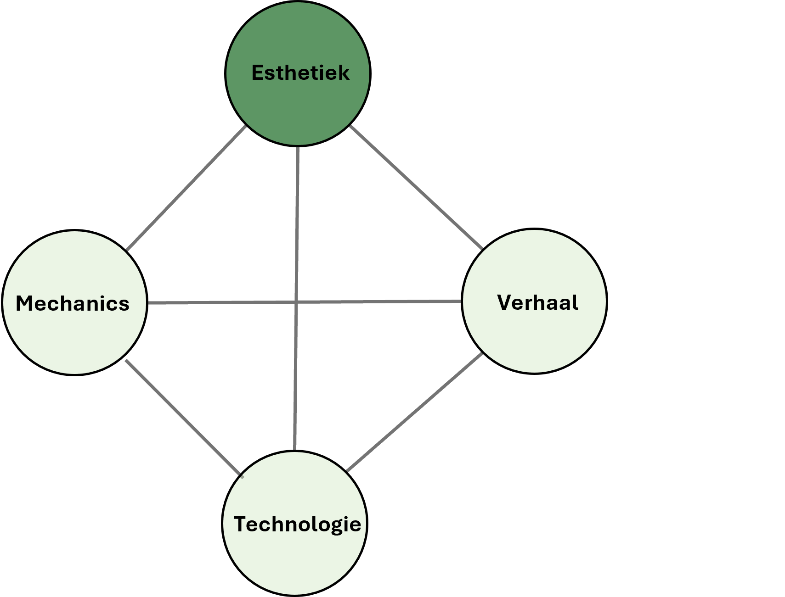

Esthetiek is een van de vier bouwstenen van spelervaring. Esthetiek gaat over de beleving van een game. Denk aan de sfeer, het geluid, de kleuren en stijl. Het bepaalt hoe een speler zich voelt tijdens het spelen. Is de game spannend, rustgevend, grappig, of juist frustrerend?
De esthetiek van Tetris is eenvoudig maar functioneel: blokken in felle kleuren, een zwart speelveld en een herkenbaar muziekje dat steeds sneller gaat. Deze minimalistische stijl helpt de speler zich volledig te concentreren op de gameplay. De simpele visuals en versnellende muziek versterken de spanning en maken het spel verslavend. Zonder deze esthetische keuzes zou Tetris waarschijnlijk minder meeslepend aanvoelen.
Een belangrijk onderdeel van esthetiek is de artwork.
Spellen met simpele graphics gebruiken plaatjes van een paar honderd pixels om de game-objecten (speler, vijanden, power ups, pick ups, enz, enz) te laten zien. Zulke plaatjes noemen we sprites. Vaak zitten ze samen in een soort vellen, sprite sheets.

Sprite sheet (stukje)
De figuurtjes in een spel kun je laten bewegen door filmstripjes van sprites te maken. iedere keer dat het spel opnieuw op het scherm gezet wordt (gerenderd wordt), ga je naar het volgende frame. Daardoor gaat de pacman hieronder happen.

= 
Pacman-frames
Opdracht 2.1: Sprite packs
We bekijken een paar bestaande sprites en hoe je die kan downloaden van het internet. Je mag ook wat downloaden van een ander site, als er maar nadrukkelijk bij staat dat je het gratis mag gebruiken.Bij grote spellen gaat het er heel anders aan toe. Om te beginnen is het in 3D, dan heb je draadmodel nodig - een static mesh - dat je van alle kanten kunt bekijken. Ook heb je een speciaal plaatje nodig, meestal texture genoemd, dat je om de mesh heen kunt vouwen, zodat het er echt als een figuur of voorwerp uitziet. Om beweging in 3D mogelijk te maken hebben poppetjes een soort van intern skelet, een rig, met botten die kunnen bewegen. Bij het weergeven van de mesh moet je dan wel precies bepalen hoe de mesh vervormt als bijvoorbeeld een arm beweegt.

Game character en het draadmodel
Al die technieken kun je gebruiken om een eigen visuele sfeer te maken. Wordt het een realistische wereld, horror, cartoony of iets speciaals als steampunk?

Beeld uit de game Pine van het Nederlandse Twirlbound
We gaan in deze module helaas niet dieper in op (het creëren van) game art. De reden: Game art, characters en animaties zijn krankzinnig veel werk, als je ze echt mooi wilt maken. In de game die je gaat ontwikkelen kun je gebruik maken van bestaande game art, muziek en geluiden. Daarvan is voldoende te vinden op internet.
Opdracht 2.2: Artwork van game X
Hoewel we er niet dieper ingaan, is het wel goed om game X kort op deze punten te bekijken. Wat maakt jouw favoriete game X mooi?